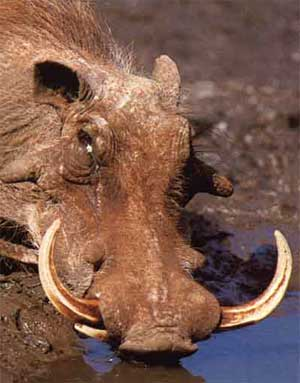

FACOCERO
|
 |
Ambiente/Habitat | Paludi ed Acquitrini |
| Frequenza | Uncommon | |
| Organizzazione | Solitario | |
| Periodo di Attività | Giorno | |
| Dieta | Onnivoro | |
| Intelligenza | Animal Intelligence (1) | |
| Punti Combattimento | Nessuno | |
| Tesoro | Nessuno | |
| Allineamento Dominante | Neutrale | |
| Numero di Apparizione | 1d3 | |
| Classe Armatura | 5 [10 base, 4 corazza, 1 destrezza] | |
| Movimento | 10 esagoni | |
| Dadi Vita | 3 (+5 punti ferita) | |
| Thac0 | 18 | |
| Numero di Attacchi | Corna | |
| Danni | 1d8+1 (Punta) | |
| Poteri Offensivi | Lacerazione Inferiore; Maestria nella Carica; Carica Potenziata; |
|
| Poteri Difensivi | Robustezza Superiore (+5 Punti Ferita); | |
| Poteri Generici | Nessuno; | |
| Vulnerabilità | Nessuna; | |
| Resistenza alla Magia | Nessuna; | |
| Sensi | Vista Comune; Sensi Superiori; | |
| Dimensioni | Medium (1,50 m. lunghezza) | |
| Morale | Elite (13) | |
| Valore in Punti Esperienza | 197 |
| MODIFICATORI AI TIRI SALVEZZA | |||||||||||||||||||||||
| COR | 0 | 49 | ENV | 0 | 55 | MAG | 0 | 62 | MAL | 0 | 47 | MEN | 0 | 60 | RIF | 0 | 54 | ROB | +5 | 48 | VEL | 0 | 49 |
Descrizione
Il Facocero fa parte della famiglia dei Suidi. E' un animale grosso e robusto, alto al garrese 70 cm., la sua pelle è dura e rugosa, di colore grigio, ricoperta da poche setole, che sono più fitte lungo la colonna vertebrale, dove formano una specie di criniera. Il facocero ha sul muso quattro verruche, due delle quali si trovano sotto gli occhi, mentre le altre due stanno tra gli occhi e le labbra. La testa del facocero è molto sviluppata e porta orecchie piccole ed appuntite; il muso è allungato e dalle labbra sporgono notevolmente i denti canini superiori (zanne) incurvati verso l'alto: essi mancano di smalto e crescono continuamente, sicché talora sono lunghi fino a 50 cm. Il corpo, lungo quasi due metri, termina con una coda piuttosto lunga che porta un ciuffo di setole ispide.
Combat
Il Facocero è un animale pericoloso che carica i propri avversari quando si sente minacciato.
LACERAZIONE INFERIORE (Lesser Special Ability): I denti di questo predatore sono lunghi ed appuntiti come coltelli. Qualora questa creatura attacca una vittima con il proprio morso colpendola con particolare precisione la stessa potrà lacerarne a fondo il corpo. Ciò avviene quando questa creatura colpisce una vittima con il suo morso effettuando un tiro per colpire naturale da 19 a 20. Quando ciò si verifica l'attacco provocherà il 1d6 danni supplementari. Tutti i danni saranno considerati danni da taglio e provenienti da un unico attacco (ad es. ai fini dei critici e dei danni alla corazza).
MAESTRIA NELLA CARICA (Lesser Special Ability): La creatura è particolarmente abile nell'effettuare manovre di carica. Per questo motivo, la stessa potrà godere dei benefici della manovra di carica (bonus di +1 al tiro per colpire e +2 ai danni che si considera dovuto alla forza dell'attaccante) anche qualora effettui tale manovra nei confronti di un avversario che si trovi già in melee (questo beneficio non si applica contro gli avversari che risultano parzialmente coperti da ostacoli fisici, cd. partial cover).
CARICA POTENZIATA (Lesser Special Ability): Il corpo di questa creatura, particolarmente adatto alla corsa, rende più facile alla stessa di caricare. Per tale motivo la creatura riceve costantemente un bonus di +4 al tiro per determinare il successo di una manovra di carica.
ROBUSTEZZA SUPERIORE (Typical Ability): Il fisico della creatura è estremamente robusto. Ciò conferisce alla stessa una robustezza superiore che gli garantisce 5 punti ferita supplementari.
RESISTENZA ALLA MORTE MODERATA (Moderate Special Ability): Questa creatura è in grado di resistere per un certo periodo di tempo anche quando raggiunge un punteggio negativo di punti ferita. In particolare, questa creatura potrà utilizzare la competenza Iron Will disponendo di una prova complessiva base pari a 14.
LESSER COMBO - MAESTRIA NELLA CARICA e POTENZIATA - Le due abilità costituiscono una combo in quanto la seconda incide in via diretta sull'utilizzo della prima. In considerazione che, in ogni caso, la possibilità di utilizzo delle due abilità nel corso di un combattimento, è assai limitata, la combo può considerarsi minore.
Habitat/Society
Il facocero è un animale selvatico che vive in branchi a base familiare (un maschio, una femmina e vari piccoli).
Ecology
Il facocero è cacciato
per la carne, per l'avorio delle zanne ed anche per la pelle che serve a vari
usi. Una carcassa di facocero ripulita ha un valore di mercato pari a 8-12 monete
d'oro.